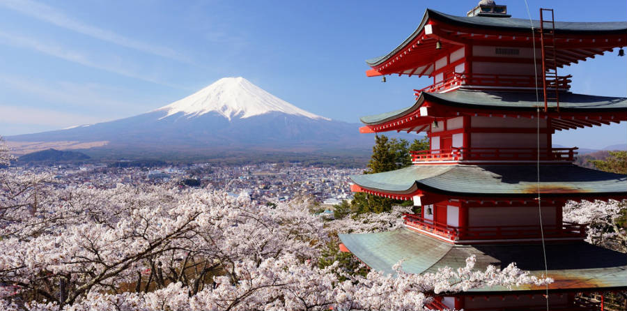
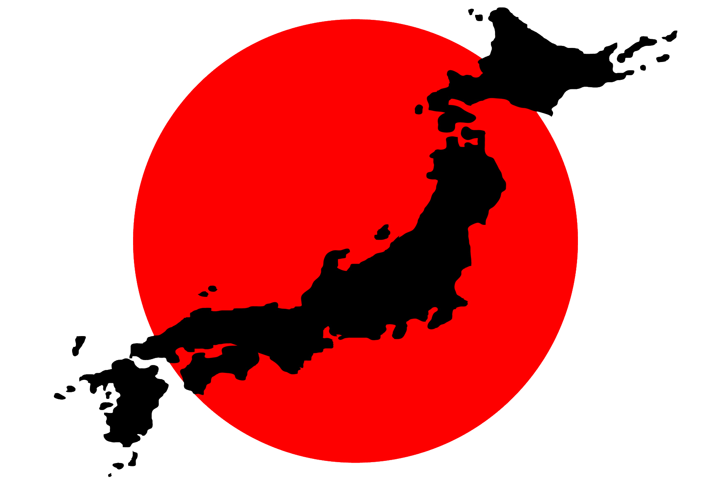
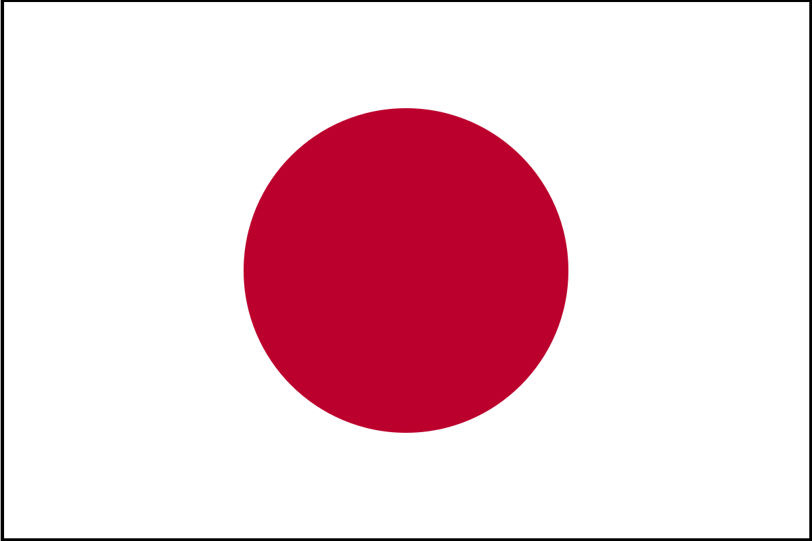

Visit Japan
Visit Japan

Welcome to Japan
Japan's Location and Geographical Information
Japan is an island nation located in Eastern Asia and is an archipelago consisting of 6 852 islands.
The four largest are Honshu, Hokkaido, Kyushu and Shikoku, which make up about ninety-seven percent of Japan's land area.
The area of the islands is estimated at 377,972 km2
Japan's Population, Languages, and Religions
Population of 126 730 000
Primary languages include a majority of Japanese, Korean, and Mandarin
Religions include:51.882% Shinto;34.9% Buddhism;4% Shinto Sects;2.3% Christianity
Japan's Economy and Political System
1 CAD is equivalent to 81.38 JPY
Estimated Nominal GDP per Capita of $38,281
There is both a Parliamentary and Monarchy system
-Emperor Akihito
-Prime Minister Shinzo Abe
Japan General Facts
Drive on the left side of the road
Time zone is JST (UTC +9)
Calling Code of +81
Japan written in Kanji means the origin of the sun
Expand for a Back to Top Link
Back to TopCreated by - Prateek Bansal
on Friday June 9 2017
All content, unless otherwise stated, is the property of Prateek Bansal